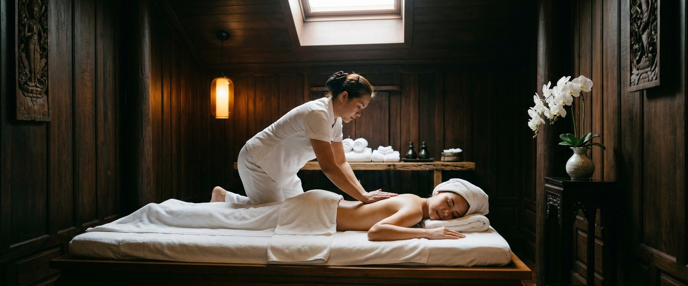
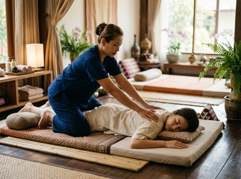

That deep, heavy ache settling into your legs the day after a hard run, a tough gym session, or a long shift on your feet is one of the most common physical complaints there is.

Sore muscles after exertion are entirely normal, but when the discomfort is stopping you from moving freely or sleeping well, you deserve more than just waiting it out. Thai massage and targeted bodywork offer a proven way to ease muscle soreness, speed up recovery, and help you feel like yourself again.
The stiffness and tenderness that builds after physical effort has a clinical name: delayed-onset muscle soreness, caused by microscopic damage to muscle fibres during exercise. Known as DOMS, it typically peaks between 24 and 72 hours after activity. It is triggered most strongly by movements where the muscle lengthens under load — running downhill, lowering weights, or squatting.

The feeling ranges from mild tenderness and reduced movement to a deep, bruised ache that makes simple tasks feel hard. It affects everyone — from seasoned athletes stepping up their training to office workers who had an active weekend.
It is not a sign of injury. It is your body adapting. But that does not make it any less uncomfortable while it is happening.
The evidence for massage as a recovery tool is well established. A 2017 review published in Frontiers in Physiology found that massage cut soreness ratings at 24 and 48 hours after hard exercise. It also reduced markers of muscle damage, including creatine kinase levels.
Traditional Thai massage uses rhythmic pressure, assisted stretching, and work along the body's energy lines. It boosts local circulation, clears metabolic waste, and reduces the tension that builds around damaged tissue. Swedish massage uses long, gliding strokes to ease surface soreness and support recovery. Sports massage applies deeper, more focused pressure to areas where tightness has formed.
At Serendipity, therapists draw on all three approaches depending on where you are in your recovery. For soreness within the first 48 hours, lighter pressure and assisted stretching tend to work best. For deeper or recurring tightness, a sports massage or Thai oil massage is more effective. You can book your session online and note what you have been doing and where you are feeling it.
Sessions begin with a brief conversation about your activity levels, what you are feeling, and what you want from the treatment. Every therapist is trained to the standard developed by head therapist Jariya Malone. Whether you book a Thai oil massage or a sports massage, the approach is adapted to your body — not a fixed routine.
The studio is on Hope Street in Glasgow city centre. If you have been on your feet all week or heading into an active weekend, a session here fits around your schedule with ease. Book your recovery session at a time that works for you.
Anyone who uses their body and wants to keep doing so. That includes runners building mileage, gym-goers increasing their training load, cyclists whose legs never feel fresh, and people returning to exercise after a break. It also includes manual workers whose muscles take daily strain, and office workers whose tension builds just as steadily — just differently.
If soreness is a regular part of your week, regular massage is not a treat. It is part of staying functional and injury-free. You can arrange your next appointment online in a few minutes.
Yes, in most cases it is not only safe but helpful. Lighter techniques such as Swedish massage and assisted stretching work well during the acute phase — typically within the first 48 hours. Therapists at Serendipity will adjust pressure and technique based on where you are in your recovery.
For mild soreness, a session within 24 to 48 hours can reduce the peak of DOMS. For deeper soreness or tight, knotted muscles, waiting 48 to 72 hours and then booking a sports massage or Thai oil massage tends to be more comfortable and more effective.
It depends on the type and degree of soreness. Swedish massage is well supported by research for reducing DOMS and suits most people after a hard session. Sports massage targets specific muscle groups with deeper pressure and works well for recurring tightness. Traditional Thai massage combines pressure and assisted stretching to address both tension and restricted movement.
Some people notice a brief increase in tenderness after a massage, especially when deeper techniques have been used. This usually settles within 24 hours. Drinking plenty of water and avoiding hard activity straight after your session helps your body process the treatment well.
Yes. Regular massage reduces the severity of DOMS over time by improving circulation, keeping muscles supple, and lowering baseline tension. Research in Frontiers in Physiology found it cut both muscle damage markers and soreness ratings after hard exercise. Clients who book regularly tend to recover faster and feel less sore than those who only come when the pain becomes too much.
No. Tension, aching, and stiffness can build from sitting too long, poor posture, stress, or daily physical tasks without enough recovery. The techniques used for post-exercise soreness — compression, stretching, and targeted pressure — work just as well for these everyday forms of muscle discomfort.